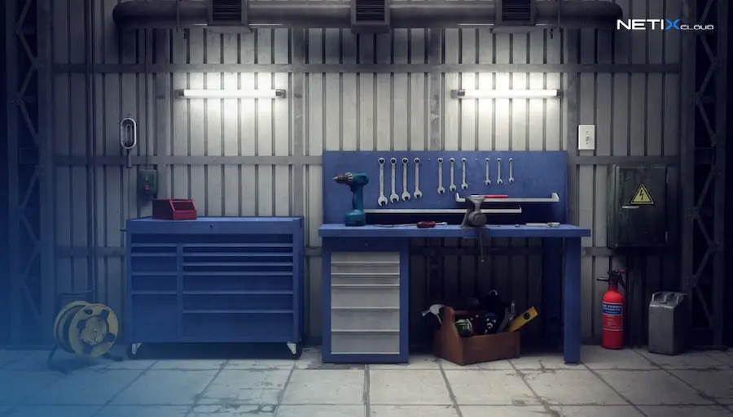
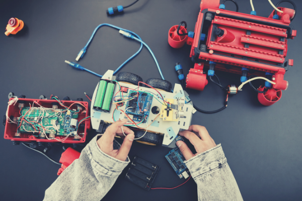
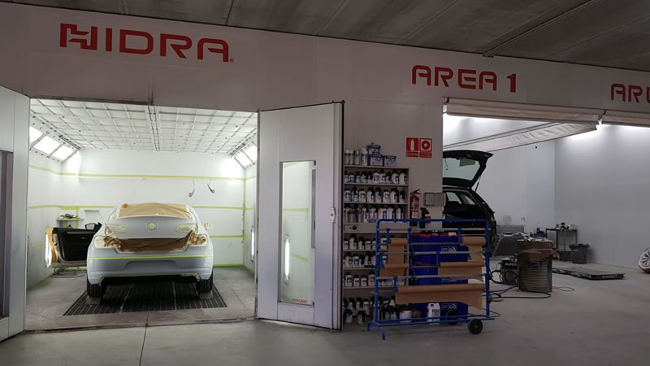
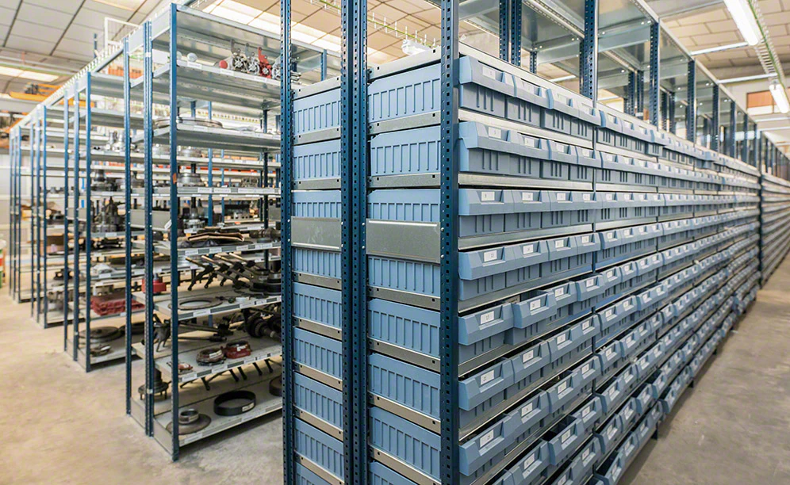
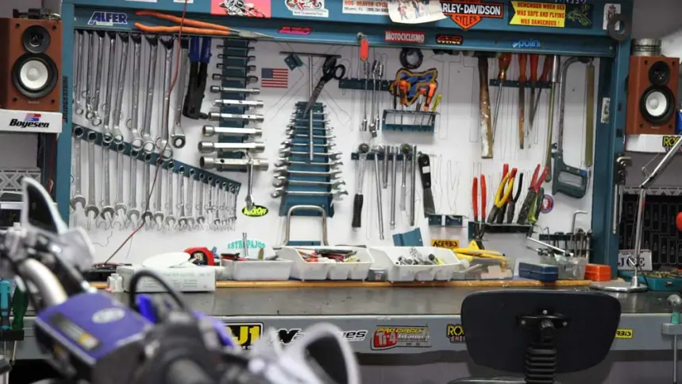
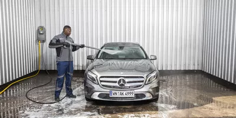

¿Que se hace en taller Mecanica?
Un taller mecánico es un lugar donde la magia de la ingeniería se hace realidad. Aquí, los expertos en mecánica trabajan con sus manos y sus mentes para reparar, mantener y mejorar los vehículos que nos transportan.
¿Qué se hace en un taller mecánico?
Diagnóstico: El primer paso es identificar el problema. Los mecánicos utilizan herramientas especiales para analizar el funcionamiento del vehículo y detectar fallos.
Reparación: Una vez detectado el problema, se procede a la reparación. Se cambian piezas dañadas, se ajustan sistemas y se realizan pruebas para asegurar que el vehículo funciona correctamente.
Mantenimiento: Además de las reparaciones, los mecánicos se encargan del mantenimiento preventivo. Esto incluye cambios de aceite, filtros, bujías y otros componentes para evitar problemas mayores.
Modificaciones: En algunos talleres, también se realizan modificaciones para mejorar el rendimiento del vehículo o adaptarlo a las necesidades del cliente.
Las herramientas del oficio:
Los mecánicos utilizan una amplia gama de herramientas, desde destornilladores y llaves hasta equipos de diagnóstico informáticos. También es fundamental el uso de manuales técnicos para comprender el funcionamiento de los vehículos.
Un trabajo que requiere pasión:
Ser mecánico es un trabajo que exige dedicación, conocimiento y pasión por la mecánica. Es un oficio que te permite resolver problemas, trabajar con tus manos y contribuir a la seguridad y movilidad de las personas.
Conocimiento de taller Mecanica
Para saber sobre mecánica de automóviles y trabajar en un taller mecánico, es importante tener en cuenta varios aspectos clave. Aquí te presento una lista de lo que necesitas:
1. Formación Académica:
Educación Secundaria Obligatoria (ESO): Es el primer requisito básico.
Título Profesional Básico: Este título te proporciona conocimientos fundamentales en mecánica.
Bachillerato: Aunque no es estrictamente necesario, tener un certificado de bachillerato puede abrir más oportunidades.
2. Formación Técnica:
Ciclos Formativos: Existen ciclos formativos de grado medio y superior en mecánica automotriz que son muy valorados.
Certificados Específicos: Algunos trabajos requieren certificados como el de Manipulación de Gases Fluorados o Técnico en Mantenimiento de Vehículos.
¡
3. Habilidades Practicas:
Experiencia Práctica: Trabajar en un taller, incluso como aprendiz, te ayudará a adquirir habilidades prácticas esenciales.
Conocimientos Técnicos: Familiarizarte con herramientas, diagnósticos y reparaciones de vehículos.
4. Actitud y Aptitudes:
Resolución de Problemas: Ser capaz de diagnosticar y solucionar problemas mecánicos.
Trabajo en Equipo: Colaborar con otros mecánicos y personal del taller.
5. Actualización Continua:
Formación Continua: La tecnología automotriz avanza rápidamente, por lo que es importante mantenerse actualizado con cursos y talleres.
Puestos de taller Mecanica
1. Área de Recepción y Atención al Cliente:
Es el lugar donde los clientes son recibidos y se registran los vehículos para su servicio. Aquí se discuten los problemas del vehículo y se proporcionan presupuestos.
2. Área de Diagnóstico y Pre-revisión:
En esta sección se utilizan herramientas y equipos para diagnosticar problemas mecánicos y electrónicos en los vehículos. Se realizan pruebas iniciales para identificar fallos.

3. Área de Mecánica General:
Aquí se llevan a cabo las reparaciones mecánicas, como cambios de aceite, reparaciones de motores, transmisiones y otros componentes mecánicos.

4. Área de Electricidad y Electrónica:
Esta parte se dedica a la reparación y mantenimiento de sistemas eléctricos y electrónicos del vehículo, como el sistema de encendido, baterías y sistemas de navegación.

5. Área de Chapa y Pintura:
En esta sección se realizan reparaciones de la carrocería, como la eliminación de abolladuras, lijado y pintura de vehículos.

6.Área de Almacenamiento de Piezas:
Un espacio donde se guardan las piezas de repuesto y suministros necesarios para las reparaciones.

7.Área de Herramientas y Equipos:
Aquí se encuentran todas las herramientas necesarias para realizar las reparaciones, como llaves, destornilladores, elevadores y equipos de diagnóstico.

8. Área de Lavado y Detallado:
Un espacio donde se limpian y detallan los vehículos después de las reparaciones.
